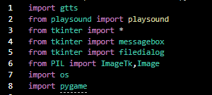
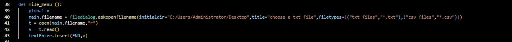
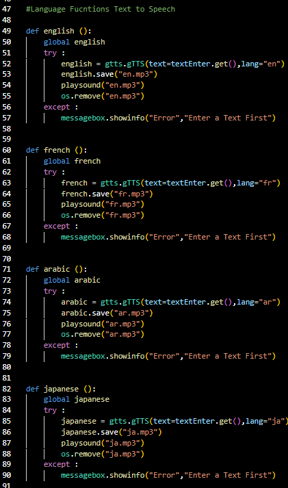
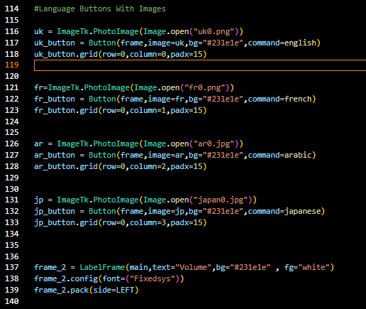
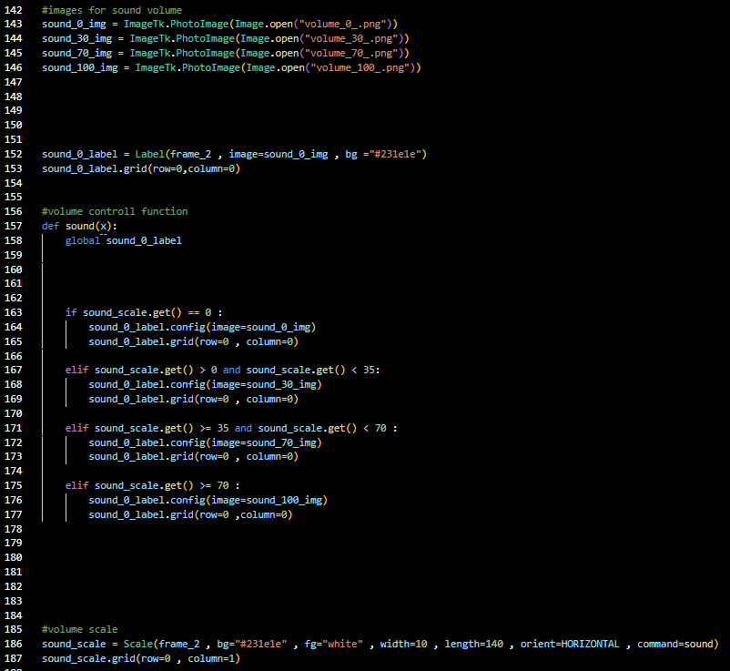
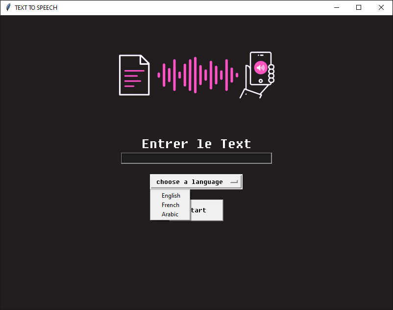
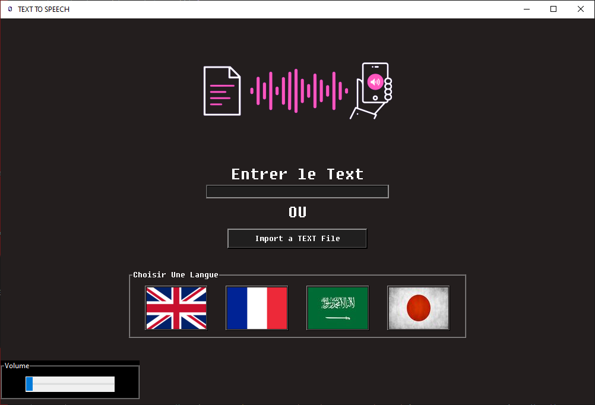

Text To Speech
__________________________________________________________
I. INTRODUCTION :
1. Les Foundateurs du Projet :
- Oussama afassi & Youssef Rami
2. Date de Création :
- 21/11/2022
3.Les Sources Utilisées :
- Cours:w3schools
- Youtube:John Elder
- Q&R:stackoverflow
II. OBJECTIF :
Le bût de notre projet est de rendre la procédure de conversion de text en parole très simple,avec la possibilité d'importer des fichiers text ('.txt') à partir de l'ordinateur d'utilisateur ('gestionnaire de fichiers')
III. Analyse du Code Source :
dans cette partie, nous allons disséquer chaque partie du code de cette application pour le rendre plus facile à comprendre
__________________________________________________________

Gtts : gtts est un outil très facile à utiliser qui convertit le texte saisi en audio pouvant être enregistré sous forme de fichier mp3
PlaySound :un module python utilisé pour jouer du son
Tkinter :un framework d'interface graphique multiplateforme intégré à la bibliothèque standard Python
Tkinter--MessageBox :un module en python qui fournit un ensemble différent de dialogues qui sont utilisés pour afficher des boîtes de message, montrant des erreurs ou des avertissements
Tkinter--filedialog :module provides classes and factory functions for creating file/directory selection windows
os :Ce module fournit un moyen portable d'utiliser les fonctionnalités dépendant du système d'exploitation
pygame :utilisé à l'origine pour créer des jeux, mais également idéal pour la manipulation du son
__________________________________________________________

Cette fonction est utilisée pour accéder au gestionnaire de fichiers et choisir un fichier texte
__________________________________________________________

Ces quatre fonctions sont utilisées pour la procédure d'obtention du fichier son du texte que nous avons en fonction de la langue choisie
__________________________________________________________

Cette partie, nous avons essayé de rendre chaque choix de langue facile à comprendre, donc la meilleure solution que nous avons trouvée est d'en faire des boutons avec des images de pays de langue maternelle au lieu d'utiliser des noms
__________________________________________________________

⚠ ATTENTION ⚠ : cette partie ne fonctionne pas
Dans cette partie, nous avons essayé de faire une slide qui contrôle le son de l'application.Pas seulement cela, mais aussi de rendre l'image du son réellement réactive à l'état du son
IV. Les Maquette :
Dans cette partie nous parlerons des prototypes précédents
C'est le premier test, il manquait toutes les nouvelles fonctionnalités mais ça fonctionnait
__________________________________________________________

Avec celui-ci, nous avons essayé d'utiliser un bouton slide, mais malheureusement, cela n'a pas fonctionné
__________________________________________________________

avec celui-ci, nous essayions encore de comprendre comment faire fonctionner le slider du son
V. Conclusion :
C'était un projet vraiment amusant, nous avons appris beaucoup de choses comme comment écrire du code plus rapidement et sans bogues, mais aussi comment mieux travailler à deux. malheureusement nous n'avons toujours pas réussi à faire fonctionner le son mais nous allons sûrement le faire fonctionner bientôt !